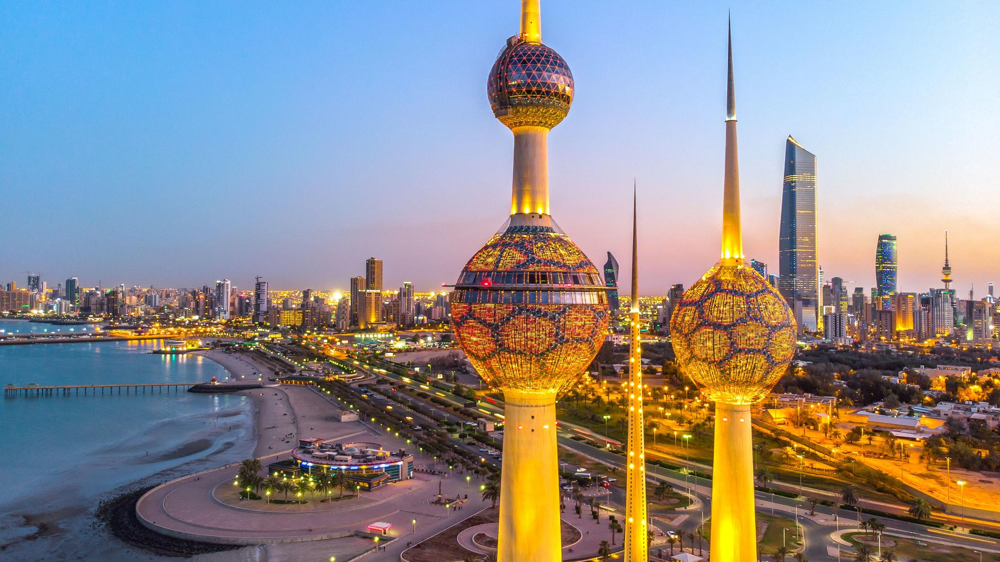

Destination Guide:
.TO UAE
Local Tips for UAE
- 1.Experience the mesmerizing Dubai Fountain show in the evenings near Burj Khalifa.
- 2.Explore the vibrant street art scene in Al Fahidi Historic District, Dubai.
- 3.For an authentic Emirati experience, try local dishes like tamia also albaik and Kunafa.
Places to Visit
- 1.Indulge in traditional Kuwaiti tea and dates at Souq Mubarakiya.
- 2.Take a stroll along the Arabian Gulf Street during sunset for breathtaking views.
- 3.Visit local art galleries in Kuwait City to explore the contemporary art scene.
1. Burj Khalifa, Dubai
2. Sheikh Zayed Grand Mosque, Abu Dhabi
3.The Palm Jumeirah, Dubai

4.Dubai Mall

Map

Things to do in UAE
The United Arab Emirates (UAE) beckons with a tapestry of experiences that seamlessly blend modern marvels and cultural richness. Begin your journey in Abu Dhabi at the Sheikh Zayed Grand Mosque, an architectural masterpiece that stands as a testament to the country's grandeur. In Dubai, immerse yourself in the surreal beauty of the Miracle Garden, a kaleidoscope of vibrant blooms arranged in intricate designs. For a glimpse into the past, wander through the Al Fahidi Historic District, where traditional wind-tower architecture and museums transport you to another era. Thrill-seekers can find their haven at Ferrari World in Abu Dhabi, home to the world's fastest roller coaster. Nature enthusiasts can explore the Al Ain Oasis, an ancient irrigation system surrounded by palm groves, or venture to Hatta for hiking and mountain biking adventures. The Louvre Abu Dhabi beckons art connoisseurs with its diverse collection, while Jumeirah's pristine beaches offer relaxation against the backdrop of the Arabian Gulf. Take a traditional dhow cruise along the Dubai Creek for a blend of culture and scenic beauty, or explore the Sharjah Arts Museum to delve into the artistic heritage of the region. Sir Bani Yas Island presents a unique wildlife reserve, and the Abu Dhabi Corniche provides a picturesque waterfront for leisurely strolls. The UAE, with its multifaceted allure, promises a tapestry of experiences that captivate the senses and leave indelible memories
.TO KUWAIT
Local Tips for Kuwait
Places to Visit
1. Kuwait Towers
2.The Avenues Mall
3.Souk Al-Mubarakiy
.Things to do in Kuwait
Kuwait, with its blend of modernity and cultural heritage, offers a range of experiences for visitors. Begin your exploration with a visit to the iconic Kuwait Towers, where panoramic views of the city and the Arabian Gulf unfold. Dive into Kuwait's rich history by exploring the Sadu House, a cultural center dedicated to preserving traditional Bedouin weaving and craftsmanship. The Grand Mosque, with its intricate architecture and serene ambiance, provides a glimpse into Islamic artistry. For a taste of local life, wander through Souq Mubarakiya, a vibrant market where you can sample local delicacies, buy traditional crafts, and engage with the friendly locals. Take a leisurely stroll along the Arabian Gulf Street, enjoying the sea breeze and the views of the city's modern skyline. For a deeper understanding of Kuwait's history, visit the Kuwait National Museum, which houses artifacts and exhibits chronicling the country's journey from antiquity to the present day. Lastly, unwind at the Scientific Center, home to an aquarium and an IMAX cinema, offering a perfect mix of education and entertainment. Whether you're drawn to cultural exploration, culinary delights, or simply soaking in the atmosphere of a bustling city, Kuwait has something to offer for every traveler.